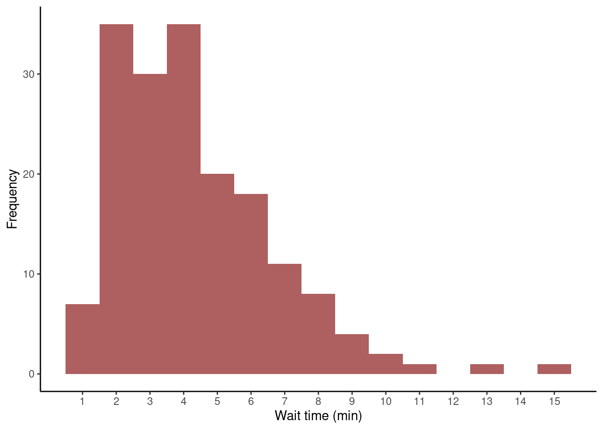
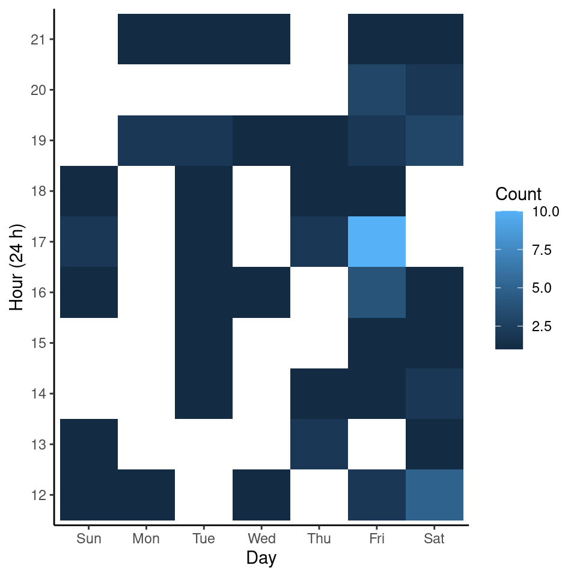

Handling Dates and Times in R
 Image credit: Pixabay
Image credit: Pixabay
The other day I requested my rides data to Uber (here). They replied with a convenient csv file containing detailed information of every ride I took between 2016 and 2019. The dataset included dates and times in UTC format. I used this dataset to try some functions of the lubridate package for handling dates and times in R.
# Load packages
library(tidyverse)
library(lubridate)
The dataset
Let’s start by importing the dataset. I removed four columns containing my address information beforehand. Still, I won’t be sharing the full dataset since it contains detailed information about the starting and ending times of each of my rides. However, you can try the code posted here with you’re own Uber data.
I’ll import the dataset with the readr::read_csv() function and check its
structure.
# Open file
filename <- "./_files/trips_data.csv"
uber_data <- read_csv(filename)
# See first rows of data
uber_data
## # A tibble: 184 x 9
## City `Product Type` `Trip or Order … `Request Time` `Begin Trip Tim…
## <chr> <chr> <chr> <chr> <chr>
## 1 Meri… UberX COMPLETED 2019-09-15 00… 2019-09-15 00:5…
## 2 Meri… UberX COMPLETED 2019-09-14 19… 2019-09-14 19:0…
## 3 Meri… UberX COMPLETED 2019-09-14 04… 2019-09-14 04:1…
## 4 Meri… UberX COMPLETED 2019-09-07 04… 2019-09-07 04:3…
## 5 Meri… UberX COMPLETED 2019-09-02 14… 2019-09-02 14:0…
## 6 Meri… UberX COMPLETED 2019-08-30 19… 2019-08-30 19:0…
## 7 Meri… UberX COMPLETED 2019-08-06 02… 2019-08-06 02:3…
## 8 Meri… UberX COMPLETED 2019-07-21 18… 2019-07-21 18:4…
## 9 Meri… UberX COMPLETED 2019-07-07 13… 2019-07-07 14:0…
## 10 Meri… UberX COMPLETED 2019-06-29 03… 2019-06-29 03:2…
## # … with 174 more rows, and 4 more variables: `Dropoff Time` <chr>, `Distance
## # (miles)` <dbl>, `Fare Amount` <dbl>, `Fare Currency` <chr>
# See data structure
map(uber_data, unique) %>%
str()
## List of 9
## $ City : chr [1:2] "Merida" "Mexico City"
## $ Product Type : chr [1:2] "UberX" "uberX"
## $ Trip or Order Status: chr [1:3] "COMPLETED" "CANCELED" "DRIVER_CANCELED"
## $ Request Time : chr [1:184] "2019-09-15 00:45:08 +0000 UTC" "2019-09-14 19:02:06 +0000 UTC" "2019-09-14 04:09:58 +0000 UTC" "2019-09-07 04:27:39 +0000 UTC" ...
## $ Begin Trip Time : chr [1:179] "2019-09-15 00:52:08 +0000 UTC" "2019-09-14 19:06:36 +0000 UTC" "2019-09-14 04:15:48 +0000 UTC" "2019-09-07 04:30:06 +0000 UTC" ...
## $ Dropoff Time : chr [1:179] "2019-09-15 01:00:35 +0000 UTC" "2019-09-14 19:10:24 +0000 UTC" "2019-09-14 04:23:46 +0000 UTC" "2019-09-07 04:34:55 +0000 UTC" ...
## $ Distance (miles) : num [1:131] 1.82 0.94 2.49 1.41 1.12 1.4 3.74 3.34 5.95 4 ...
## $ Fare Amount : num [1:148] 63.2 22.8 37.7 26.7 25.4 ...
## $ Fare Currency : chr "MXN"
The dataset has nine columns:
| Column name | Description |
|---|---|
| City | The city where the ride was requested (Merida or Mexico City). |
| Product Type | Type of servide: Uberx or uberX. They’re both the same. |
| Trip or Order status | Whether the trip was canceled, completed, or canceled by driver. |
| Request Time | Date and time when the trip was requested in UTC. |
| Begin Trip Time | Date and time when the trip started in UTC. |
| Dropoff Time | Date and time when the trip finished in UTC. |
| Distance (miles) | Total distance of the trip in miles. |
| Fare Amount | How much did the trip cost. |
| Fare Currency | Currency. All in Mexican pesos (MXN). |
I don’t need all of this information. I only want to analyze the trips that happened in Merida, where I’m from and where most of the trips occurred. I don’t need the Product Type nor the Fare Currency columns since they both contain a single type of value each. So, I’ll only keep the distance, fare, and date-time data of the completed rides. Also, I need to change the names of the columns for ones that are easier to write.
uber_data <- uber_data %>%
filter(City == "Merida", `Trip or Order Status` == "COMPLETED") %>%
select(request_time = `Request Time`, begin_time = `Begin Trip Time`,
dropoff_time = `Dropoff Time`, distance = `Distance (miles)`,
fare = `Fare Amount`)
uber_data
## # A tibble: 173 x 5
## request_time begin_time dropoff_time distance fare
## <chr> <chr> <chr> <dbl> <dbl>
## 1 2019-09-15 00:45:08 … 2019-09-15 00:52:0… 2019-09-15 01:00:35… 1.82 63.2
## 2 2019-09-14 19:02:06 … 2019-09-14 19:06:3… 2019-09-14 19:10:24… 0.94 22.8
## 3 2019-09-14 04:09:58 … 2019-09-14 04:15:4… 2019-09-14 04:23:46… 2.49 37.7
## 4 2019-09-07 04:27:39 … 2019-09-07 04:30:0… 2019-09-07 04:34:55… 1.41 26.7
## 5 2019-09-02 14:04:26 … 2019-09-02 14:06:4… 2019-09-02 14:12:28… 1.12 25.4
## 6 2019-08-30 19:01:33 … 2019-08-30 19:07:1… 2019-08-30 19:21:54… 1.4 36.3
## 7 2019-08-06 02:31:16 … 2019-08-06 02:34:4… 2019-08-06 02:48:46… 3.74 52.9
## 8 2019-07-21 18:36:19 … 2019-07-21 18:40:1… 2019-07-21 18:55:17… 3.34 62.3
## 9 2019-07-07 13:54:41 … 2019-07-07 14:01:0… 2019-07-07 14:14:24… 5.95 56.1
## 10 2019-06-29 03:20:57 … 2019-06-29 03:26:4… 2019-06-29 03:44:50… 4 58.1
## # … with 163 more rows
The dataset looks better now. However, the request_time, begin_time, and dropoff_time columns, which contain date and time values, are stored as character vectors. It would be better to have them in a specialized vector for handling dates and times.
Parsing dates and times
In R, date and time data can be handled as:
- Date vectors, for dates.
- POSIXct or POSIXlt vectors, for date-time data.
- difftime vectors, for duration.
If you want to know more about these types of vectors, this blog post offers a good introduction to the use of dates and times in R. In this case, a POSIXct vector would be appropiate to store and handle my data.
Usually, read_csv() does a good job in guessing how dates and times are stored when they’re in ISO 8601 format,
but in this case the UTC offset is not recognized (+0000). So, I need to parse it explicity with the
readr::parse_datetime() function. Also, I want to convert the time format from UTC to local time for an easier use.
my_time_zone <- Sys.timezone() # I'm in "America/Merida" time zone at the moment of writing this post. Check OlsonNames() for more time zones.
uber_data <- uber_data %>%
map_if(is.character,
~readr::parse_datetime(.x,
format = "%Y-%m-%d %H:%M:%S %z %Z",
locale = locale(tz = my_time_zone))) %>%
as_tibble()
uber_data
## # A tibble: 173 x 5
## request_time begin_time dropoff_time distance fare
## <dttm> <dttm> <dttm> <dbl> <dbl>
## 1 2019-09-14 19:45:08 2019-09-14 19:52:08 2019-09-14 20:00:35 1.82 63.2
## 2 2019-09-14 14:02:06 2019-09-14 14:06:36 2019-09-14 14:10:24 0.94 22.8
## 3 2019-09-13 23:09:58 2019-09-13 23:15:48 2019-09-13 23:23:46 2.49 37.7
## 4 2019-09-06 23:27:39 2019-09-06 23:30:06 2019-09-06 23:34:55 1.41 26.7
## 5 2019-09-02 09:04:26 2019-09-02 09:06:49 2019-09-02 09:12:28 1.12 25.4
## 6 2019-08-30 14:01:33 2019-08-30 14:07:15 2019-08-30 14:21:54 1.4 36.3
## 7 2019-08-05 21:31:16 2019-08-05 21:34:49 2019-08-05 21:48:46 3.74 52.9
## 8 2019-07-21 13:36:19 2019-07-21 13:40:11 2019-07-21 13:55:17 3.34 62.3
## 9 2019-07-07 08:54:41 2019-07-07 09:01:06 2019-07-07 09:14:24 5.95 56.1
## 10 2019-06-28 22:20:57 2019-06-28 22:26:41 2019-06-28 22:44:50 4 58.1
## # … with 163 more rows
In the code above I used purrr::map_if() to parse the character vectors in the
dataset to POSIXct vectors. Remember that map functions give a list as output, so I had to convert the output back to a tibble.
Within the parse_date() function I used two arguments:
- The format argument with the specifciations for date, time, offset, and UTC.
- The locale argument with my current time zone (“America/Merida”).
Now, the dates and times in my dataset are in the correct object type (POSIXct vectors) and I can handle them easily with functions of the lubridate package.
Getting duration of the trips
Now that the datetime columns have been parsed correctly and are in the local time zone, it’s easy to do calculations with them.
Let’s calculate how much time did I wait for each trip and how long each trip lasted. I can calcuate how much I waited for each trip by estimating the interval between the time of request and the time of start of my trips. An interval between the start of the trip and the time of arrival will tell me how long a trip lasted. I’ll use the “interlval operator” (%--%) from the lubridate package to get these intervals.
I’ll also convert the distance to km and calculate the overall fare rate of each trip.
uber_data <- uber_data %>%
mutate(wait = request_time %--% begin_time / dminutes(1),
duration = begin_time %--% dropoff_time / dminutes(1),
distance = distance * 1.60934,
rate = fare / distance)
str(uber_data)
## tibble [173 × 8] (S3: tbl_df/tbl/data.frame)
## $ request_time: POSIXct[1:173], format: "2019-09-14 19:45:08" "2019-09-14 14:02:06" ...
## $ begin_time : POSIXct[1:173], format: "2019-09-14 19:52:08" "2019-09-14 14:06:36" ...
## $ dropoff_time: POSIXct[1:173], format: "2019-09-14 20:00:35" "2019-09-14 14:10:24" ...
## $ distance : num [1:173] 2.93 1.51 4.01 2.27 1.8 ...
## $ fare : num [1:173] 63.2 22.8 37.7 26.7 25.4 ...
## $ wait : num [1:173] 7 4.5 5.83 2.45 2.38 ...
## $ duration : num [1:173] 8.45 3.8 7.97 4.82 5.65 ...
## $ rate : num [1:173] 21.6 15.1 9.4 11.8 14.1 ...
In the code above, I divided the intervals by 1 minute to get the output in minutes. The dminutes() is from the lubridate package as well.
Let’s look at the frequency distribution of my wait times between request and beginning of my trips.
p1 <- uber_data %>%
ggplot(aes(wait)) +
geom_histogram(binwidth = 1, fill = "firebrick4", alpha = 0.7) +
labs(x = "Wait time (min)", y = "Frequency") +
scale_x_continuous(breaks = seq(1,15,1)) +
theme_classic()
p1

It seems that most of the times I waited between 2 and 6 minutes. Once, I waited 15 minutes!
I’ll use tidyeval to create a function that allows me to create a scatter plot between the different variables of the dataset.
get_label <- function(x) {
x_var <- rlang::as_name(enquo(x))
return(case_when(x_var == "distance" ~ "Distance (Km)",
x_var == "duration" ~ "Duration (min)",
x_var == "fare" ~ "Fare (MXN)",
x_var == "rate" ~ "Fare Rate (MXN/Km)",
x_var == "wait" ~ "Wait Time (min)"))
}
make_scatter_plot <- function(x, y) {
x_var <- enquo(x)
y_var <- enquo(y)
uber_data %>%
ggplot(aes(!!x_var, !!y_var)) +
labs(x = get_label(!!x_var), y = get_label(!!y_var)) +
geom_smooth() +
geom_point(size = 0.75, color = "firebrick4") +
theme_bw()
}
p2 <- make_scatter_plot(duration, fare)
p3 <- make_scatter_plot(distance, fare)
p4 <- make_scatter_plot(distance, duration)
p5 <- make_scatter_plot(duration, rate)
ggpubr::ggarrange(p2, p3, p4, p5)

Not suprisingly, longer trips were more expensive.
Extracting time components from date-time vectors
Individual datetime components can be extracted with lubridate. For example, here is a bar plot depicting the number of Uber rides I took per month (lubridate::month()) and year (lubridate::year()):
total_number_of_trips <- length(uber_data$request_time)
p6 <- uber_data %>%
group_by(year = year(request_time),
month = month(request_time, label = TRUE)
) %>%
summarise(percent = n() / total_number_of_trips) %>%
ungroup() %>%
ggplot(aes(month, percent, fill = factor(year))) +
geom_col(aes(group = factor(year))) +
facet_wrap(. ~ factor(year), strip.position = "top") +
labs(x = "Month", y = "Trips (%)") +
scale_y_continuous(labels = scales::percent) +
scale_fill_viridis_d(option = "E") +
guides(fill = guide_legend(title = "Year")) +
theme(panel.grid.major.x = element_blank())
p6

And, here is a heatmap about the number of trips I took per day of the week (lubridate::wday()) and hour (lubridate::hour):
p7 <- uber_data %>%
count(day = wday(request_time, label = TRUE),
hour = hour(request_time),
name = "Count") %>%
filter(between(hour, 12, 21)) %>%
ggplot() +
geom_tile(aes(x = day, y = factor(hour), fill = Count)) +
labs(x = "Day", y = "Hour (24 h)") +
guides(fill = guide_colorbar(title = "Count")) +
theme_classic()
p7

I made a lot of Uber requests between the 17:00 and 18:00 hours on Fridays. I used to have appointments with my nutritionist at 18:00 on Fridays, I suppose that’s what’s reflected on the heatmap plot.
Conclusion
In this post I used my Uber rides data to practice how to:
- Correctly parse a UTC offset with
readr::parse_datetime(). - Calculate intervals and durations with the lubridate’s interval operator (
%--%), and thelubridate::dminutes()function. - Extract date-time components with lubridate’s
year(),month(),hour(), andwday()functions.
This post was updated on November 26, 2020.
info <- sessionInfo()
toLatex(info, locale = FALSE)
## \begin{itemize}\raggedright
## \item R version 4.0.3 (2020-10-10), \verb|x86_64-pc-linux-gnu|
## \item Running under: \verb|Ubuntu 20.04.1 LTS|
## \item Matrix products: default
## \item BLAS: \verb|/usr/lib/x86_64-linux-gnu/blas/libblas.so.3.9.0|
## \item LAPACK: \verb|/usr/lib/x86_64-linux-gnu/lapack/liblapack.so.3.9.0|
## \item Base packages: base, datasets, graphics, grDevices, methods,
## stats, utils
## \item Other packages: dplyr~1.0.2, forcats~0.5.0, ggplot2~3.3.2,
## lubridate~1.7.9, purrr~0.3.4, readr~1.3.1, stringr~1.4.0,
## tibble~3.0.3, tidyr~1.1.2, tidyverse~1.3.0
## \item Loaded via a namespace (and not attached): abind~1.4-5,
## assertthat~0.2.1, backports~1.1.9, blob~1.2.1, blogdown~0.20,
## bookdown~0.20, broom~0.7.0, car~3.0-9, carData~3.0-4,
## cellranger~1.1.0, cli~2.0.2, colorspace~1.4-1, compiler~4.0.3,
## cowplot~1.0.0, crayon~1.3.4, curl~4.3, data.table~1.13.0,
## DBI~1.1.0, dbplyr~1.4.4, digest~0.6.25, ellipsis~0.3.1,
## evaluate~0.14, fansi~0.4.1, farver~2.0.3, foreign~0.8-80, fs~1.5.0,
## generics~0.0.2, ggpubr~0.4.0, ggsignif~0.6.0, glue~1.4.2,
## grid~4.0.3, gtable~0.3.0, haven~2.3.1, hms~0.5.3, htmltools~0.5.0,
## httr~1.4.2, jsonlite~1.7.1, knitr~1.29, labeling~0.3,
## lattice~0.20-41, lifecycle~0.2.0, magrittr~1.5, Matrix~1.2-18,
## mgcv~1.8-33, modelr~0.1.8, munsell~0.5.0, nlme~3.1-149,
## openxlsx~4.1.5, pillar~1.4.6, pkgconfig~2.0.3, R6~2.4.1,
## Rcpp~1.0.5, readxl~1.3.1, reprex~0.3.0, rio~0.5.16, rlang~0.4.7,
## rmarkdown~2.3, rstatix~0.6.0, rstudioapi~0.11, rvest~0.3.6,
## scales~1.1.1, splines~4.0.3, stringi~1.4.6, tidyselect~1.1.0,
## tools~4.0.3, utf8~1.1.4, vctrs~0.3.4, viridisLite~0.3.0,
## withr~2.2.0, xfun~0.16, xml2~1.3.2, yaml~2.2.1, zip~2.1.1
## \end{itemize}
Samuel David Gamboa-Tuz
Ph.D. in Biological Sciences
My research interests include bioinformatics, molecular biology, and evolution.